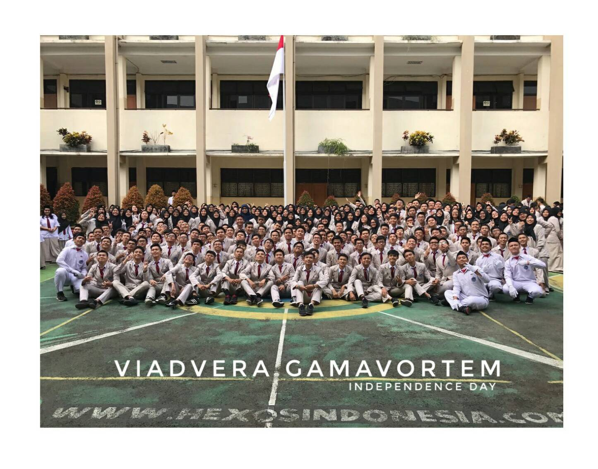

About me
Sekilas saja. Aku adalah seorang bujang yang terlahir sekitar 17 tahun lalu jika dihitung sejak bulan Juli tahun ini. Nama ku Yogi Hermawan, nama tersebut juga diberikan sekitar 17 tahun lalu, sekitar tanggal 22 Juli. Atau mungkin lebih, karena memberikan nama bukan hal yang mesti dilakukan sepreti menjawab soal Lomba Cepat Tepat.
School

Saat ini saya bersekolah di sekolah yang cukup ternama di Bogor. SMK-SMAK Bogor. Orang-orang biasa menyebutnya SMAKBO. Begitu namanya sekarang. Tapi dulu tidak seperti itu, ketika Herman Busser pertama kali menjadi kepala sekolah pada tanggal 1 September 1950 namanya adalah Analysten Cursus. Sesuai dengan namanya, SMAKBO ini adalah sekolah analisis kimia berjangka waktu 4 tahun. Kehidupan ku mulai merumit ketika mulai berkecimpung dengan dunia kimia . Seru sekaligus menegangkan.
Hobbies
Hobiku sendiri banyak, tapi yang paling aku gemari adalah bermain game. Mulai dari game FPS, Racing, Online Game, Adventure, Horror, dan banyak lagi.
Selain itu bermain game saya juga hobi bermain basket.